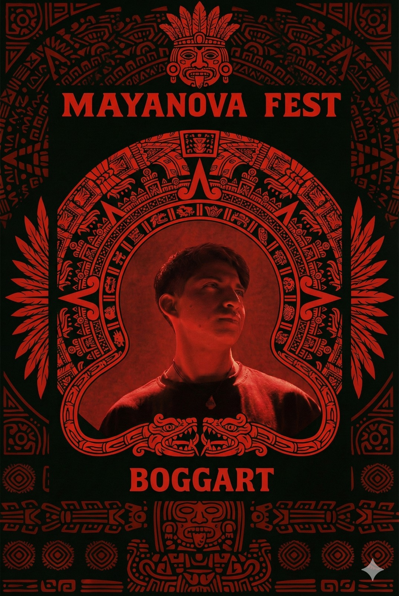

BOGGART
Especializado en hard techno, conocido por descargar ritmos acelerados, kicks contundentes y una energía abrasadora que lleva a la pista al límite. Su sonido combina fuerza, precisión y un estilo crudo que convierte cada presentación en una experiencia extrema y explosiva.
Instagram: Boggart